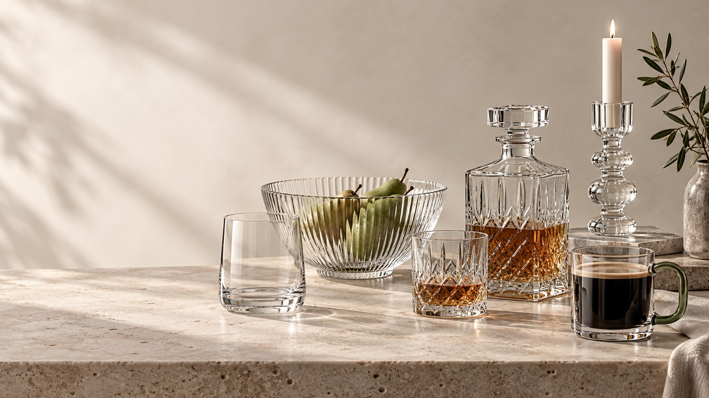
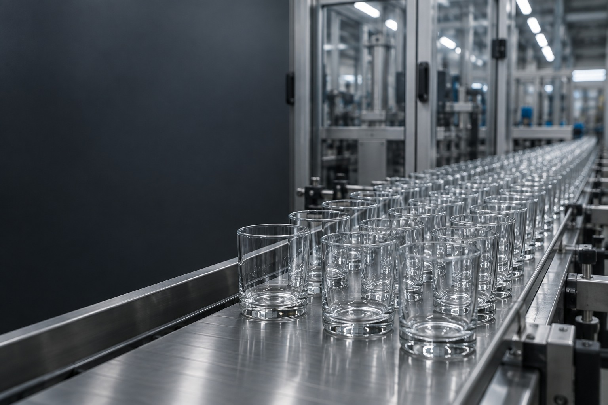

STYLE 01
查看整套图片 →Original Studio
暖白深绿 · 清晰、自然、简洁
查看完整方案 →Imprint Works Group · 原版与两套新风格。点击进入完整页面或查看对应图片。

暖白深绿 · 清晰、自然、简洁
查看完整方案 →
深色奢雅 · 黑石、香槟光影、衬线字体
查看完整方案 →
暖色编辑 · 陶土、日光、酒红点缀
查看完整方案 →
工业制造 · 工程蓝、技术规格、加工与质量规划
查看完整方案 →